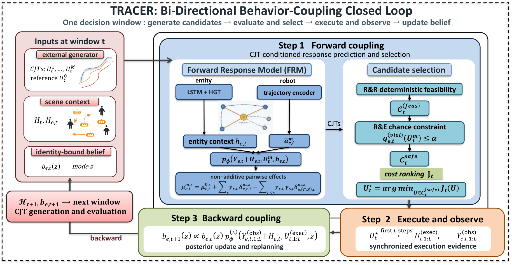
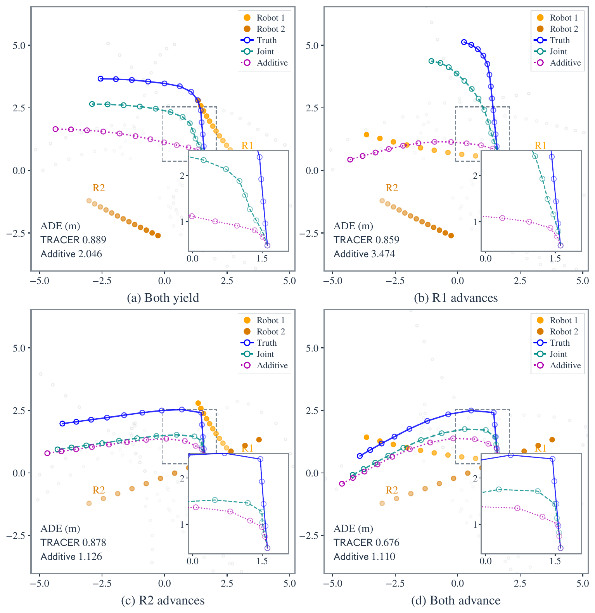
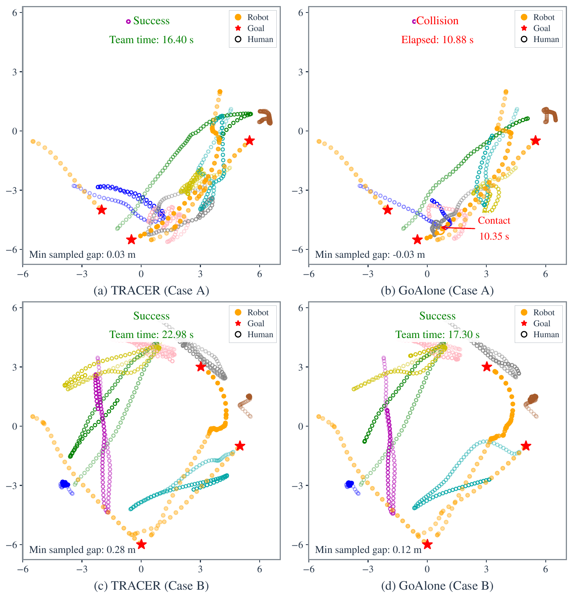
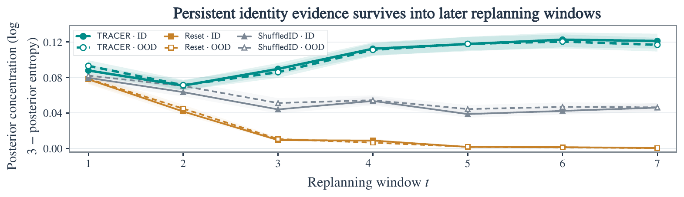

Multi-robot social navigation
Robot teams that learn from how people respond
TRACER predicts how people react to joint robot plans, executes a short prefix, then updates persistent beliefs from what it observed before it replans.
Narrated overview, 2 min 50 s: joint response prediction, closed loop replanning, and comparisons on SocialGym2 and CrowdSimPlus.
The gap
Prediction, planning and adaptation usually live apart
Coordinated robot motion changes how nearby people respond, and those responses carry information for the next decision. Existing methods typically treat action conditioned prediction, multi-robot planning and online adaptation separately, so nothing models joint robot and human interaction and learns from what actually happened.
TRACER closes that loop.
Joint plans shape human responses. Executed interactions update beliefs. Updated beliefs guide the next plan.
Why it works
Three ideas that turn one interaction into the next decision
Compare genuinely joint plans
Each person’s response is conditioned on the whole team trajectory, split into individual robot effects and non-additive pairwise interactions.
Keep evidence on the right person
Identity bound beliefs over latent response modes carry what one interaction revealed into later replanning windows.
Plan with safety and response in mind
Candidates pass robot to robot feasibility and response aware chance constraints, then are ranked by task, safety and response costs.
Run it on a laptop
The CPU demo trains a small response model on generated data and runs seven decision windows. No dataset or GPU needed.
How it works
A receding horizon loop with memory

TRACER predicts joint action responses, executes a short prefix, updates identity bound beliefs from the observed responses, and replans.
Predict and select
Condition each human response on the full team trajectory: a reference term, individual effects and a non-additive pairwise residual. Pick a feasible candidate.
Execute and observe
Execute a synchronized prefix of the chosen plan and observe how each person actually responds.
Update and replan
Bind each response to its identity, update the latent mode belief, and carry that evidence into the next window.
Evidence
Measured against matched baselines
lower pair effect RMSE than a capacity matched additive predictor, from 0.451 to 0.343
collision free completion on SocialGym2, up from 22.5% for GoAlone
paired SocialGym2 episodes behind the closed loop comparison
The SocialGym2 comparison is against GoAlone. It does not establish that every component ablation is worse. Controlled ungated replanning, conditional safety gate attribution, development scenes and later external checks have separate interpretations in the result index.

Predicted human trajectory under four robot action combinations: truth (blue), joint prediction (teal) and an additive predictor (magenta), with ADE per case.

TRACER (left) against GoAlone (right). In Case A GoAlone ends in a collision while TRACER succeeds. Both succeed in Case B.

Across seven replanning windows TRACER keeps its posterior concentration, while Reset and ShuffledID variants lose it, in both ID and OOD settings.
FAQ
Questions people ask
Do I need a GPU?
No. The CPU demo trains a small response model on generated data and runs seven decision windows with persistent belief updates.
What is included in the repository?
Code, protocol configs, selected result tables and a small synthetic demo checkpoint. External simulators, datasets and trained weights for the formal experiments are not included. The asset guide lists what is needed.
Does the SocialGym2 result mean every component helps?
No. The reported gain is the full framework against GoAlone, an independent robot baseline. Component ablations and later checks have their own interpretations in the result index.
Can I reproduce the paper tables?
The reproduction guide lists commands, formal configs and requirements. Formal runs need the external simulators and assets described in the asset guide.
Which Python version should I use?
Python 3.11 or newer. Continuous integration runs on Python 3.11 and 3.12, on Linux and Windows.
How do I cite TRACER?
Use the BibTeX entry below or the CITATION.cff file in the repository.
What is the license?
The code is released under the MIT license. Third party notices are linked in the footer.
Read how TRACER closes the loop
The paper, code, a CPU demo and a Colab notebook are all open.
git clone https://github.com/Larryhul/TRACER.git
cd TRACER
python -m pip install -e ".[dev]"
python -m tracer.demo --output outputs/demo@misc{tracer_manuscript,
title = {TRACER: Adaptive Multi-Robot Social Navigation via Joint Human-Response Prediction and Interaction-Aware Replanning},
author = {Hu, Lan and Liwang, Minghui and Zhu, Wenbo and Yi, Xinlei and Gong, Wei and Hong, Yiguang and Hosseinalipour, Seyyedali},
year = {2026},
eprint = {2609.18776},
archivePrefix = {arXiv},
primaryClass = {cs.RO},
url = {https://arxiv.org/abs/2609.18776}
}